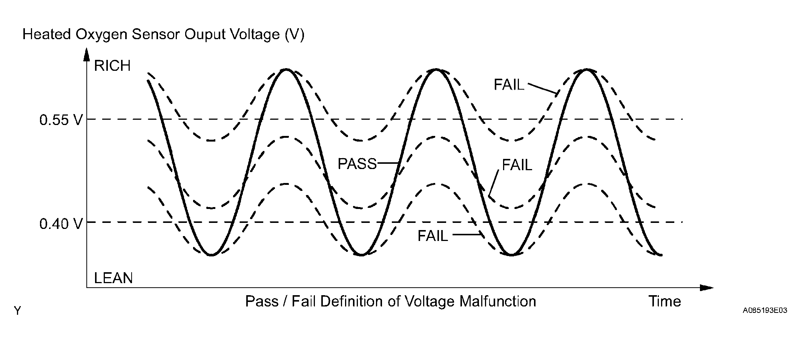

Home
>>
Scion
>>
2006
>>
xB Standard
>>
Repair and Diagnosis
>>
Engine Performance
>>
Engine Control Systems
>>
Engine Control System (1NZ-FE)
>>
Parts Location
>>
DTC P0130 Oxygen Sensor Circuit Malfunction (Bank 1 Sensor 1); DTC P2195 Oxygen Sensor Signal Stuck Lean (Bank 1 Sensor 1); DTC P2196 Oxygen Sensor Signal Stuck Rich (Bank 1 Sensor 1)
>>
Monitor Description
Monitor Description
Fig 1: Identifying Monitor Description Graph

Courtesy of © TOYOTA, LICENSE AGREEMENT TMS1002